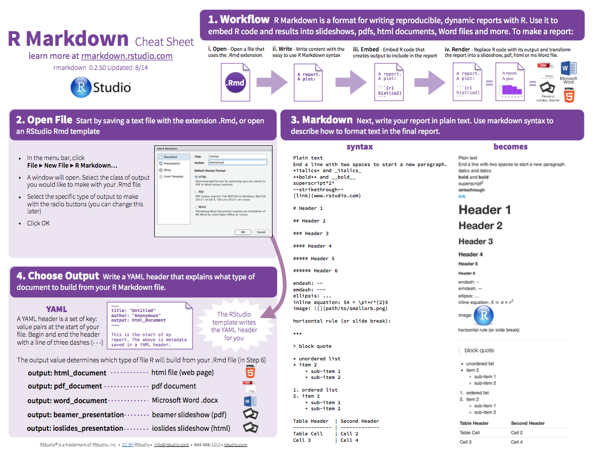
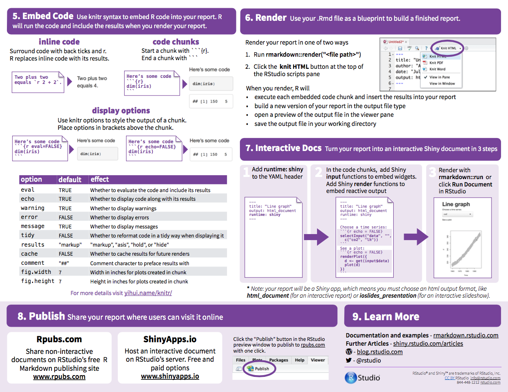

HW1: Exploratory Data Analysis
Download the HW1 skeleton files. To successfully complete the first assignment you will have to do the following:
- Create a new project with the name
homework1.Rproj. - Following the instructions below, complete missing code in chunks in
hw1_ex1.Rmd,hw1_ex2.Rmd,hw1_ex3.Rmdandhw1_ex4.Rmd. - Build the final report
hw1_report.Rmd=hw1_ex1.Rmd+hw1_ex2.Rmd+hw1_ex3.Rmd+hw1_ex4.Rmd.
To obtain the maximum number of points, use whenever possible:
- the pipeline symbol
%>%, dplyrverbs (see below),kableto print tables,ggplotto produce the figures.
| verb | description | |
|---|---|---|
select() |
select columns | |
filter() |
filter rows | |
arrange() |
re-order or arrange rows | |
mutate() |
create new columns | |
summarise() |
summarise values | |
group_by() |
group operations |
Revise writing report using RMarkdown


Data transformation hands-on
Once you’re environment is set up, you’re ready to get your hands dirty with some data manipulation:
- Exercise 1: Setup
- Exercise 2: Motor Trend Car Road Tests
- Exercise 3: New York Air Quality Measurements
- Exercise 4: Armed Conflicts, Visualization and Fact Checking
Begin by writing your code in the corresponding code chuncks in hw1_ex1.Rmd,
hw1_ex2.Rmd, hw1_ex3.Rmd and hw1_ex4.Rmd. Then, use Knitr to render the
full report hw1_report.Rmd.
Don’t forget to save your files and keep them ready and clean for the next session.
Exercise 1: Setup
Connecting to remote repository
To submit your homework you should connect to your assigned repository. If you need some help, follow the instructions on this link, Section: Clone an existing GitHub project to new RStudio project.
Project Setup ‘homework1.Rproj’
Use the files provided in the skeleton to structure your project in the following way:

Notes on the grading
Essentially, the points are counted as follows:
- 1 point “per command”, dplyr verbs/helper functions such as desc/assignments counts as “1 command”.
- 2 points per interpretation.
- 1 point “per aesthetics” (counting x and y as a single aesthetic, but color/pch and others separately) + 1 point “per geom” + 1 point for labels/titles in general.
- 1 points per call to kable (should be “polished” to get full points for the
kablecolumn).